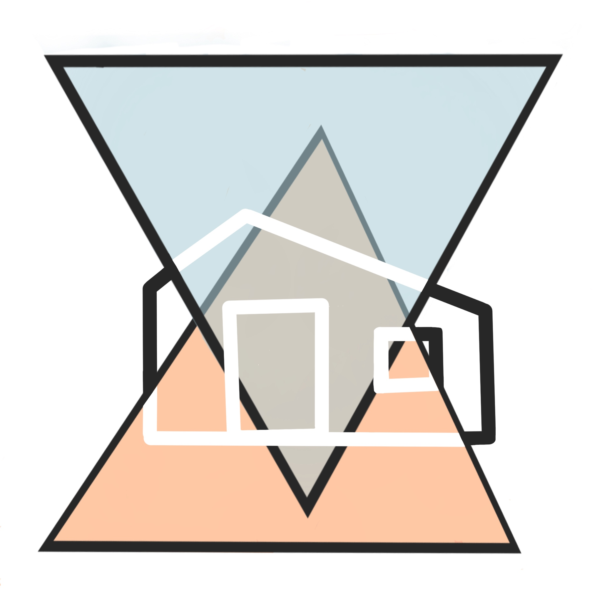

EDC Website
Date - Jan 2020-June 2020
Client - Evanston Development Co-op (EDC)
Role - Web Developer
Skills - HTML, CSS, Javascript
Date - Jan 2020-June 2020
Client - Evanston Development Co-op (EDC)
Role - Web Developer
Skills - HTML, CSS, Javascript
About
Our project with the Evanston Development Co-op (EDC) involved creating a website for their On to 2022 campaign. EDC is a co-operative based on out of Evanston, IL that campaigns for the legalization of Accessory Dwelling Units (ADUs) in Chicago and across the country. The goal of this project was to:
1 - promote education about the benefits of ADUs
2 - increase awareness of the legality of ADUs
3 - mobilize campaigners for the legalization of ADUs.
What are ADUs?
ADUs, also commonly known as coach houses or granny flats, are smaller dwellings located on the same property as a single-family home. Historically, many municipalities across the country have restricted or banned these types of housing. However, ADUs actually bring many benefits to communities, such as additional income for homeowners, increased affordable housing, reduced urban or suburban sprawl, and minimizing the environmental impact of housing.
What are ADUs?
ADUs, also commonly known as coach houses or granny flats, are smaller dwellings located on the same property as a single-family home. Historically, many municipalities across the country have restricted or banned these types of housing. However, ADUs actually bring many benefits to communities, such as additional income for homeowners, increased affordable housing, reduced urban or suburban sprawl, and minimizing the environmental impact of housing.
The Website
To address the goals of our client, we built a website that provided easy access to information on ADUs. We included basic information on what ADUs are as well as various data visualization features about ADU statistics. Additionally, we included a contact form that visitors can use to get in contact with EDC about ADU legalization efforts in their area, which allows interested people to easily mobilize towards this cause.
Data Visualization of ADU Legality
On this project, I lead the design and development of a data visualization feature that helps users quickly see how ADU-friendly certain states are. While EDC is based in Evanston, IL, our client wanted to not only target residents of Chicagoland, but wanted to provide relevant information to people across the country.
After some initial brainstorming and research, we came up with the idea for an interactive map that displayed different tiers of ADU-friendliness for each state and would not only provide quick access to national ADU guidelines, but would make this page more interactive and fun for the visitors.
Data Visualization of ADU Legality
On this project, I lead the design and development of a data visualization feature that helps users quickly see how ADU-friendly certain states are. While EDC is based in Evanston, IL, our client wanted to not only target residents of Chicagoland, but wanted to provide relevant information to people across the country.
After some initial brainstorming and research, we came up with the idea for an interactive map that displayed different tiers of ADU-friendliness for each state and would not only provide quick access to national ADU guidelines, but would make this page more interactive and fun for the visitors.